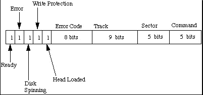
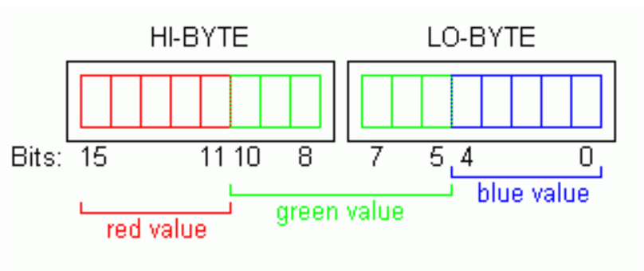

1242.1 Langage C - 2026-2027
1. structures : "struct"
2. structures : les champs de bits
3. "union"
4. "enum"
5. "typedef"
Nombres entiers
| Anonymes | int, short, … |
| enum |
| Nombres flottants | float, double, … |
| Tableaux | [ ] |
| Fonctions | ( ) |
| Pointeurs | * |
| struct | |
| union |
typedef
La
Syntaxe de la déclaration d'un type structure :
struct [identificateur] ⟵
{
type1 membre1;
type2 membre2;
…
typeN membreN;
}[var1, ...]; ⟵
1x optionnel
Exemple : déclaration d’un type struct PatientFile
struct PatientFile // déclaration du type
{
// déclaration des membres
char name[32];
short age;
float height, weight;
};
Déclaration d’une variable client de type struct PatientFile
struct PatientFile client;
Déclaration et initialisation de variables c1, c2, c3, de type struct PatientFile
struct PatientFile c1 = {"Jules",25,176.,72.},
c2 = {"Eva",18},
c3 = {"Ed",.height=145,59.};
≥C99
c1
c2
c3
À la déclaration d'un type structure, il est permis de déclarer directement une ou plusieurs variables de ce type. On peut même le faire sans nommer le type structure
struct
{
float x,y;
} point1, point2;
⟵ type anonyme
point1 et point2 sont des variables de type structure
struct date_Struct
{
short day, month, year;
};
struct PatientFileB_Struct
{
char name[32];
struct date_Struct birthDate;
float height;
};
struct Date
struct FicheB
misterDurand
struct PatientFileB _Struct misterDurand ={"Durand", {13,2,1976}, 190.0};
Variable de type structure, accès par
Syntaxe
<variable>.<membre>
Exemples
struct PatientFile myPatient;
myPatient.height = 190.0;
strcpy(myPatient.name, "Edgar");
myPatient
Avec un
accès avec l'opérateur d'indirection :
Syntaxe
<pointeur>-><membre>
Exemple
struct PatientFileB patientX = {"Jean", …};
struct PatientFileB *ptrPatient = &patientX;
ptrPatient‑>height = 190.0;
ptrPatient‑>birthDate.yr = 1976;
ptrPatient
Possible si même type
struct PatientFileB patientX = {"Jean", …};
struct PatientFileB patientY;
patientY = patientX; // Tout le contenu est recopié
patientY.height = patientX.height;
// Problème avec les chaines de caractères
patientY.name = patientX.name;
strcpy(patientY.name,patientX.name); // solution
Exemple
struct MyStruct
{
...
};
Une fonction peut retourner un résultat de type structure, ou un pointeur sur une structure
struct MyStruct function1(…);
struct MyStruct* function2(…);
Une structure peut être passée comme paramètre à une fonction
… function3(struct MyStruct s);
… function4(struct MyStruct* ptr_s);
Exemple
C'est un type struct particulier qui permet de
Compacter des données
Aligner des données
Chaque membre est défini comme un
Syntaxe de la déclaration d'un type champs de bits:
struct identificateur
{
type1 membre1 : nbre_bits;
type2 membre2 : nbre_bits;
…
typeN membreN : nbre_bits;
};
Le type d'un champ doit être entier
| int , | unsigned int, |
| char, | unsigned char, |
| long, | unsigned long, |
| long long, | unsigned long long |
struct myStruct
{
unsigned i : 2;
unsigned j : 5;
int : 4;
char k : 1;
unsigned m : 4;
};
struct myStruct mot = {3,10,1}; // initialisation des 3 premiers champs
| bit n° | 15 | 14 | 13 | 12 | 11 | 10 | 9 | 8 | 7 | 6 | 5 | 4 | 3 | 2 | 1 | 0 |
| mot | 1 | 0 | 1 | 0 | 1 | 0 | 1 | 1 | ||||||||
| ⟵ m ⟶ | k | ⟵ inutilisé ⟶ | ⟵ j ⟶ | ⟵ i ⟶ | ||||||||||||
Une variable «champs de bits» est utilisée comme une structure. L'accès aux différents champs se fait de la même manière que l'accès aux membres.
Le nombre de bits d'un champ doit être une valeur entre 1 et la taille du type du champs. Par ex. entre 1 et 8 pour char, ..., entre 1 et 64 pour long long.
Des champs sans nom sont autorisés, cela dépend de l'environnement
L'ordre dans lequel les bits d'un champ sont stockés n'est pas garanti ► dépend de la plate-forme ou du compilateur
Les opérations courantes sur les entiers (+, -, *, /, %) ne sont pas applicables à une variable champs de bits
Lorsque la valeur que l'on veut stocker dans un champ est trop grande par rapport au nombre de bits réservés, la valeur est tronquée, les bits de poids fort sont perdus
L'emploi des champs de bits n'économise pas forcément de la mémoire. Le gain de stockage des données, peut être perdu par la taille du code nécessaire à la manipulation des champs
struct Date
{
unsigned year : 11;
unsigned month: 4;
unsigned day : 5;
};
struct Date today = {2018, 1, 14};
printf("Date: %3d/%2d/%4d\n", today.year,
today.month, today.year);
Souvent, les contrôleurs de périphériques (p.ex. un disque dur) et le système d'exploitation ont besoin de communiquer à bas niveau.
Les contrôleurs de ces périphériques contiennent
struct DISK_REGISTER {
unsigned ready:1;
unsigned error_occured:1;
unsigned disk_spinning:1;
unsigned write_protect:1;
unsigned head_loaded:1;
unsigned error_code:8;
unsigned track:9;
unsigned sector:5;
unsigned command:5;
};
struct DISK_REGISTER *prtDisk_reg =
(struct DISK_REGISTER *) DISK_REGISTER_MEMORY;
//Define sector and track to start read
prtDisk_reg->sector = new_sector;
prtDisk_reg->track = new_track;
prtDisk_reg->command = READ; 2222

⟵ 32 bits ⟶
Les unions permettent de stocker des objets de types différents dans un
Syntaxe
union identificateur
{
type1 membre1;
type2 membre2;
…
typeN membreN;
};
Remarque la taille d'une variable de type union est fixe; elle correspond à la place nécessaire pour stocker le membre le plus grand.
union myUnion
{
float f;
int i;
char c[4];
};
union myUnion n;
la variable n pourra contenir, selon les besoins :
- soit un float
- soit un int
- soit un tableau de char.
union myUnion n;
n.f = 1.2f;
printf("%f ", n.f);
printf("0x%x", n.i);
1.200000 0x3f99999a
https://www.h-schmidt.net/FloatConverter/IEEE754.html
Remarque : une variable union ne peut être initialisée lors de sa déclaration qu'à travers son premier membre.
typedef struct // Structure contenant les 3 couleurs
{
unsigned blue : 5; // 5 bits pour blue
unsigned green : 6; // 6 bits pour green
unsigned red : 5; // 5 bits pour red
} RGB565_bits;
union RGB565 // Union contenant les deux variantes
{
RGB565_bits RGB565_values;// 3 couleurs => 5,6,5 bits
int RGB565_global; // Valeur sur 16 bits
}; // int obligatoire pour gcc => minimum 32 bits

union RGB565 pixel;
Déclaration d’une variable pixel
pixel.RGB565_global = 0x8411;
Ecriture du pixel «globalement»
pixel.RGB565_values.blue = 0x11;
pixel.RGB565_values.green = 0x20;
pixel.RGB565_values.red = 0x10;
Ecriture du pixel couleur
par couleur
| 15 | 14 | 13 | 12 | 11 | 10 | 9 | 8 | 7 | 6 | 5 | 4 | 3 | 2 | 1 | 0 | |
| RGB565_value | 1 | 0 | 0 | 0 | 0 | 1 | 0 | 0 | 0 | 0 | 0 | 1 | 0 | 0 | 0 | 1 |
| RGB565_global | 8 | 4 | 1 | 1 | ||||||||||||
Permet d'attribuer un
Syntaxe
enum nomdutype
{
identificateur1 [= valeur1], 0
identificateur2 [= valeur2], 1
... 2
identificateurN [= valeurN] ...
} [liste_variables] ;
[optionnel]
{
enum status{stopped, running} motor;
enum colors{red, orange, green};
enum weekDays{monday, tuesday, wednesday, thursday, friday, saturday, sunday};
enum colors trafficLight; // déclaration
motor = running;
if (trafficLight != green)
motor = stopped;
int red = 254; // symbole réservé (dans la portée)
}
Les énumérations simplifient le code (+ lisible), et sont supportées par beaucoup d'IDE (aide contextuelle).
Les identificateurs d'une énumération sont réservés (limite de la portée).
→ plus utilisable pour autre déclaration
On peut :
déclarer une variable de type
utiliser une valeur identifiée par une énumération comme une constante
La valeur d'une variable de type
Le langage C permet de renommer des types en leur donnant un synonyme
L'intérêt est de
La déclaration d'un nouveau type (synonyme) se fait avec le mot-clé typedef
Offre un outil
typedef unsigned char Uint8;
typedef double Sfp64;
typedef <Type standard> <Nom de type>;
typedef int Entier;
Entier v1; // équivalent à int v1
typedef <Type std> <Nom de type>[<N>];
typedef char CHAINE[80];
CHAINE v2; // équivalent à char v2[80]
typedef <Type std>* <Nom de type>;
typedef int* IntPtrTy;
IntPtrTy v3; // équivalent à int* v3
typedef <Déf struct> <Nom de type>;
typedef struct
{
char nom[20];
int age;
}
PersonneTy;
PersonneTy v4; // équiv. à struct personne v4
Quelle est la différence entre struct et typedef struct ?
struct t1 { ... }; //1.
typedef struct { ... } T2; //2.
t1 est un identificateur de structure. Le type associé est struct t1
T2 est un nouveau type. Cette écriture permet plus d'abstraction de type :
struct t1 v1; // struct traine
T2 v2; // Abstraction
typedef <Déf énum> <Nom de type>;
typedef enum{lundi, mardi, mercredi, jeudi, vendredi, samedi, dimanche}JOURSEM;
JOURSEM JourCourant, JourFinPeriode;
JourCourant = mercredi;
JourFinPeriode = JourCourant;
typedef <Type retour> (*<Nom de type>)(<Type1>,...);
int max (int, int) {...}
typedef int (*FnctPtr)(int, int);
FnctPtr f1=&max; // ou int (*f1)(int, int)=&max;
(*f1)(4,5); // appellera Max(4,5)